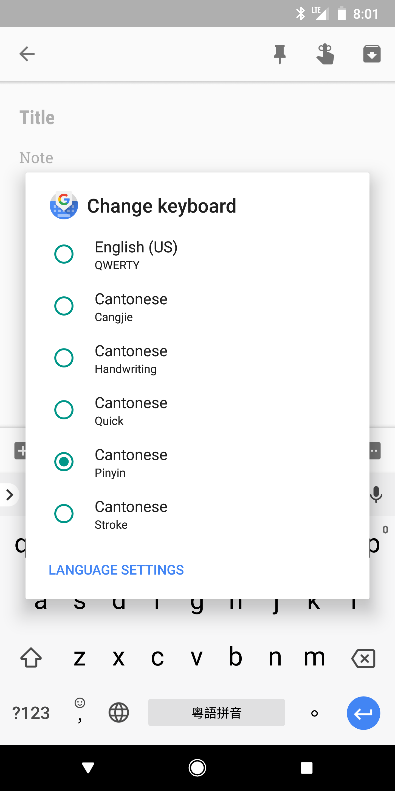

Cantonese on Android
How to write, type, listen to, and dictate Cantonese on your Google Android phone or tablet.
Write
To input Chinese Cantonese by Handwriting or strokes:
- Go to Settings > System > Languages & Input > Virtual keyboard > Gboard
- ( If you do not see Gboard, download Gboard from the Play Store. )
- In GBoard Settings.
Add Cantonese: Languages > Add keyboard > Chinese > Cantonese - You can now select: Cangjie, Handwriting, Quick Cangjie, or Stroke.
Now, wherever you see the keyboard, you can Hold the Globe icon ( üåê ) and select the keyboard you want.
Type
To type Cantonese on Android:
- Go to Settings > System > Languages & Input > Virtual keyboard > Gboard
- ( If you do not see Gboard, download Gboard from the Play Store. )
- In GBoard Settings.
Add Cantonese: Languages > Add keyboard > Chinese > Cantonese - Select the keyboard Pinyin.
- Select Pinyin Standard. Android allows Cantonese to be typed using Jyutping, Yale, or Cantonese Pinyin.
Now, wherever you see the keyboard, you can Hold the Globe icon ( üåê ) and select Cantonese Pinyin keyboard.
Listen (TTS)
To get your Android phone to read out Cantonese Chinese text (Text to Speech):
- Go to Settings > Accessibility > Select to Speak, and select “On”.
- Go to Settings > Accessibility > Text-to-speech output > Language, and select “Cantonese (Hong Kong)”.
Now, whenever you see Cantonese Chinese Text, you can listen to it by:
- Tap the Person Icon  in the bottom right .
- Highlight the section of the screen you want read out loud. The text will then play .
 |
Dictate
To input Cantonese Chinese by speaking to your Android Phone (via Speech to Text, Dictation):
- Go to Settings > System > Languages & Input > Virtual keyboard > Google Voice Typing
- Go to Languages
- Select "廣東話（香港)" (Cantonese (Hong Kong)). Tap Save.
Now, wherever you see the keyboard, you can tap the Dictation button (  ) and start speaking in Cantonese.
Google Assistant
Google's Voice Assistant (for Android and Google Home), does NOT support Cantonese yet.
If you want to see Google Assistant support Cantonese. Please let Google know.
You can write your own message, or copy the following:
Please add support for Cantonese Chinese (zh-HK, yue) to Google Assistant.  Copy
-
Then: Activate Google Assistant (?) > Say or Type “Send Feedback” > Send your message.
Note: As of 2019-10-28, Google's Voice Assistant supports Cantonese on some Android Smartphones. You can see if Cantonese is supported on your Android Phone with these instructions.
Footnotes
Note: The information here is based on a Google Pixel 2, running Android 8.1.0.
Last updated 2018-06-01.